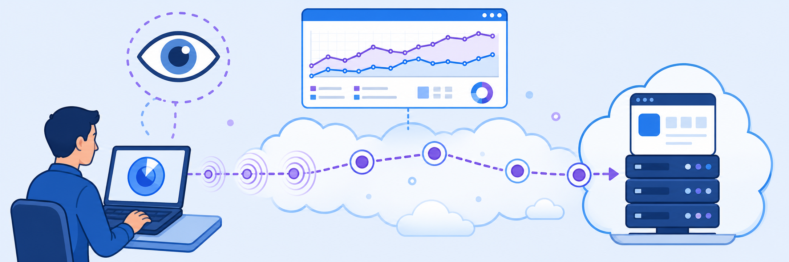

Lab 8: ZDX Cloud App Monitoring
Scenario: You are a Network Operations Center (NOC) Engineer and remote users are complaining about choppy audio during Microsoft Teams calls. You decide to configure Zscaler Digital Experience (ZDX) monitoring for a custom cloud application to gather synthetic performance data. You will create an End User Collection, add a custom Mail Server application, then configure both a Web probe (HTTP GET to measure availability and page load time) and a Cloud Path probe (ICMP to trace network hops and measure latency) running every 5 minutes from all user endpoints.

ZDX uses synthetic probes running on enrolled endpoints to continuously measure application and network performance. Before configuring them, think about what each probe type measures and when you'd use one vs. the other.
- A Web probe performs a real HTTP GET to the target URL, measuring DNS resolution time, TCP connection time, TLS handshake time, and page load time. A Cloud Path probe sends ICMP packets hop-by-hop to the target. What is the key operational difference — and why do you configure both rather than just one?
- ZDX probes run from the user's enrolled ZCC endpoint, not from a data centre probe server. Why does this matter for diagnosing remote user experience problems?
- You set the End User Collection Probing Criteria to "All" (all user groups, users, locations, devices). You set the Exclusion Criteria to "None". The PDF notes that if probing criteria is defined at the collection level, the probe-level criteria is ignored. What does this mean operationally for managing a large deployment?
An End User Collection groups applications and their probes under a shared scope of users and exclusions. You will create a collection called "Custom Application" that covers all users with no exclusions.
- Sign in to the Experience Center at console.zscaler.com.
- Navigate to Configuration > Digital Experience Monitoring > Configuration > Probes > End User.
- Select Add to create a new End User Collection.
- In the Add End User Collection drawer, under End User Collection Settings, enter:
- Name:
Custom Application - Status: Enable
- Name:
- Under Exclusion Criteria, leave all fields set to None:
- User Groups: None
- Users: None
- Location Group: None
- Zscaler Locations: None
- Departments: None
- Devices: None
- Under Probing Criteria, set all fields to All:
- User Groups: All User Group
- Users: All Users
- Location Group: All Location Groups
- Zscaler Locations: All Zscaler Locations
- Departments: All Departments
- Devices: All Devices
- Select Add.
- Confirm the End User Collection named Custom Application appears in the list.
Note: If probing criteria is defined at the collection level (as it is here), that scope takes precedence — any probing criteria configured at the individual probe level will be ignored. Configure the scope at whichever level makes sense for your deployment.
Within the End User Collection, you add applications to monitor. You will create a custom "Mail Server" application — initially disabled, so no probes run until you configure them and then enable it.
- Navigate to the Custom Application End User Collection you created in Task 8.1.
- Select Add Application.
- In the Add Application drawer, enter:
- Name:
Mail Server - Status: Disabled (leave disabled for now — you will enable it after adding probes)
- Application Type: Custom
- Name:
- Select Add.
- Confirm the Mail Server application appears under the Custom Application collection in the left-hand tree.
Why create it disabled? The application starts Disabled so that ZDX doesn't begin probing before the probes are configured. You will enable it in Task 8.3 after the Web probe is created — at that point, ZDX will automatically activate the Web probe and begin collecting metrics.
You will configure two probes for the Mail Server application: a Web probe (HTTP GET to measure availability and load time) and a Cloud Path probe (ICMP to trace the network path and measure hop-by-hop latency). Then you will enable the application so probing begins.
Step 1 — Add Web Probe
- Under the Mail Server application, select Add Probe.
- In Add Probe in Custom Application, select End User Web, then select Next.
- Under Configure Web Probe, enter the following values, then select Next:
- General:
- Name:
Mail Server_Web - Application: Mail Server
- Run Frequency (minutes): 5
- Name:
- Probing Criteria:
- Users: All
- User Group: All
- Locations: All
- Location Group: All
- Departments: All
- Devices: All
- Exclusion Criteria:
- Users: None
- User Group: None
- Locations: None
- Location Group: None
- Departments: None
- Devices: None
- Additional Parameters:
- Destination URL:
https://mail.google.com - Number of Attempts: 2
- Timeout (seconds): 60
- Follow Redirect: Enable
- Maximum redirect: 5
- Destination URL:
- General:
- Review the configuration and select Submit to create the Web probe.
- Confirm the
Mail Server_Webprobe appears under Mail Server (Status: Disabled, Protocol: GET, every 5 minutes).
Step 2 — Enable the Mail Server Application
- In the Mail Server application panel, click the three-dot menu (⋮) and select Edit.
- In the Edit Application drawer, set Status to Enabled.
- Select Update to save.
- Confirm Mail Server now shows Enabled and the
Mail Server_Webprobe status changes to Enabled automatically.
Step 3 — Add Cloud Path Probe
- Under the Mail Server application, select Add Probe again.
- In Add Probe in Custom Application, select End User Cloud Path, then select Next.
- Under Configure Cloud Probe, enter the following values, then select Next:
- General:
- Name:
Mail Server_Cloud - Status: Enabled
- Application: Mail Server
- Probe Type: Cloud Path
- Follow Web Probe:
Mail Server_Web - Run Frequency (minutes): 5
- Name:
- Probing Criteria:
- Users: All
- User Group: All
- Locations: All
- Location Group: All
- Departments: All
- Devices: All
- Exclusion Criteria: all None
- Cloud Path Probe Configuration:
- Protocol: ICMP
- Packet Count: 5
- Interval (ms): 1000
- Timeout (ms): 1000
- Cloud Path Host:
mail.google.com
- General:
- Review the probe configuration and select Submit to create the Cloud Path probe.
- Confirm that both probes now appear under Mail Server:
Mail Server_Web— Enabled, GET, every 5 minutesMail Server_Cloud— Enabled, ICMP, every 5 minutes
Important: After enabling the custom cloud application, ZDX enables the Web probe automatically. Depending on your ZDX plan, it can take 15–30 minutes for metrics to appear for a newly configured application. Continue to the next lab, and then return later to verify the metrics in ZDX Analytics.
- Endpoint-Based Probes: ZDX synthetic probes run on enrolled ZCC endpoints — not central servers — to capture the real end-user network path.
- Two Probe Types: Web probe measures application-layer availability and load time; Cloud Path probe traces the network route hop-by-hop using ICMP.
- Diagnosis: Together they let you distinguish application-level slowness from a network-layer bottleneck and pinpoint exactly where degradation occurs.